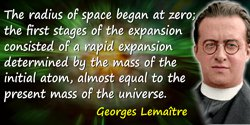
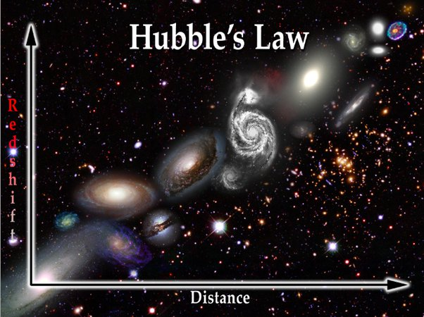

The Big Bang Theory
Introduction:
The Big Bang Theory stands as a cornerstone in our understanding of the universe's origins, describing a momentous event where the cosmos expanded from an initial state of immense density and temperature. This groundbreaking theory was first proposed in 1927 by the Roman Catholic priest and physicist Georges Lemaître.
Georges Lemaître's Insight:
Georges Lemaître's visionary idea posited that the universe, in its infancy, existed as a single point. This singular point then underwent a remarkable expansion, evolving into the vast expanse we observe today. Lemaître's theory challenged conventional wisdom, setting the stage for a revolutionary shift in cosmological understanding.

The Universe's Unfathomable Stretch:
If the universe had expanded too rapidly, it risked becoming almost devoid of matter. Stephen Hawking further theorized that the universe might be finite yet boundless, lacking a distinct beginning or end in time but existing with a finite quantity of matter and energy.
An Astronomer's Revelation:
In 1927, astronomer Georges Lemaître introduced the idea that the universe, once a minuscule point, stretched and expanded over time, reaching its current vastness. The notion of a continuously expanding universe laid the foundation for our comprehension of cosmic evolution.
Edwin Hubble's Observations:
Two years later, Edwin Hubble's observations added substantial weight to Lemaître's theory. Hubble noticed that galaxies were moving away from each other, with those farther away accelerating at a greater pace. This observation reinforced the concept of an expanding universe, indicating that everything was once closely grouped together.

The Dynamic Evolution of the Universe:
The universe's journey from a hot, tiny beginning to its current expansive state is a captivating tale of transformation. Initially composed of hot particles mingled with light and energy, it gradually cooled as it expanded. The formation of atoms marked a pivotal stage, eventually leading to the birth of stars, galaxies, and cosmic entities such as asteroids, comets, planets, and black holes.
Chronicle of a Cosmic Odyssey:
Over a staggering expanse of time, the universe has undergone a series of remarkable events. Stars formed, lived out their lifecycles, and birthed new elements, contributing to the diverse cosmic landscape we behold today. The universe's age, estimated at 13.8 billion years, encapsulates a narrative of cosmic evolution that continues to captivate our imaginations.
Embark on a journey through time and space as we unravel the mysteries and marvels of the Big Bang Theory. From the infinitesimal beginnings to the colossal expanse of the cosmos, join us in exploring the awe-inspiring tale of the universe's origin and evolution.